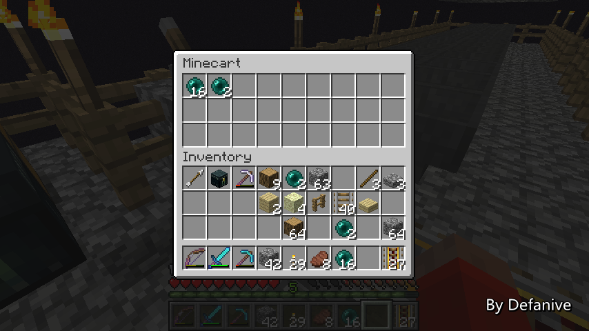
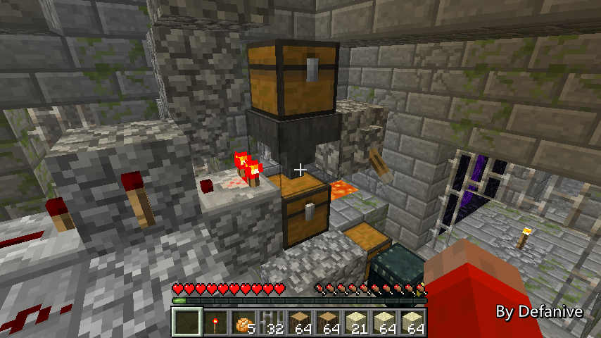
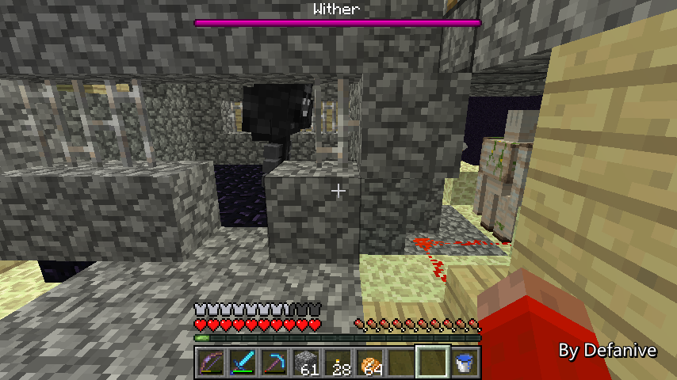

首页
上一页
268
269
270
271
272
273
273
274
275
276
277
278
下一页
末页
defanive2
无尽黑夜
14
并且被送入箱子矿车里面
PS 为什么不做个自动检测+发射矿车系统呢
因为没什么必要，毕竟不是个长久工程
——来自 MCLive

22680楼
2013-09-21 13:31
defanive2
无尽黑夜
14
一切测试正常，接下来重新开启和平模式
——来自 MCLive
22681楼
2013-09-21 13:32
defanive2
无尽黑夜
14
接下来手动把矿车箱子都装满物品
然后测试运行一次看看效果怎么样
——来自 MCLive
22682楼
2013-09-21 13:33
defanive2
无尽黑夜
14
前面一只小黑挡路 = =
——来自 MCLive
22683楼
2013-09-21 13:34
defanive2
无尽黑夜
14
箱子矿车到了未加载区块之后就会停止运动
不过这没什么问题，只要玩家往回走的时候推一把就好了
——来自 MCLive
22685楼
2013-09-21 13:38
defanive2
无尽黑夜
14
END门处没有任何矿车，应该是成功传送了
——来自 MCLive
22687楼
2013-09-21 13:39
defanive2
无尽黑夜
14
可以看到箱子矿车我我坐的矿车都被顺利传送到spawn point了
——来自 MCLive
22689楼
2013-09-21 13:41
defanive2
无尽黑夜
14
而箱子矿车里面的物品自然都在
通过这个方法可以很方便跨世界运输大批量物品
比末影箱更加快速
——来自 MCLive
22690楼
2013-09-21 13:42
defanive2
无尽黑夜
14
好吧，今天就直播到这里了
这会是一个比较大的工程，会争取在1.7出来之前完成
目标是刷够20大箱子的黑曜石
这么多的黑曜石应该可以足够我使用很久了
无论怎么说，今天完成了大工程的一部分
下一次再继续！
——来自 MCLive
22691楼
2013-09-21 13:44
defanive2
无尽黑夜
14
稍过一会会进行“娱乐直播，1.5.1原版生存——复制物品BUG”的直播
http://tieba.baidu.com/p/2592688525
如果看累了太正经的生存直播的话，可以看这个直播娱乐一下
连着2次直播，算是给大家中秋的一个小小福利吧
22695楼
2013-09-21 13:57
defanive2
无尽黑夜
14
终于又到一个周末了，我们来打MC吧！
PS 1.7各种新快照
对于生存来说除了新地形以外暂时还没有什么新东西
不过对于地图制作者来说就很屌炸天了
繁华写了一个帖子介绍了1.7的新命令
可以看到地图制作会有更多的可能
——来自 MCLive
22846楼
2013-09-28 09:57
defanive2
无尽黑夜
14
其实下午的时候已经玩了很久的MC了
主要是进行凋零刷黑曜石工程的建造
由于其建造过程实在是非常长，所以决定不直播
现在建造完了，可以开始实际运行了
当然，详细的原理会在以后创造模式讲解
——来自 MCLive
22854楼
2013-09-28 10:04
defanive2
无尽黑夜
14
为什么全身空呢
因为下午玩的时候进世界前忘记把和平关掉
于是不小心把END的和平装置里的小黑给清除了
刚刚进行了平装置的重置
所以说身上的装备都放到END里面了
——来自 MCLive
22857楼
2013-09-28 10:06
defanive2
无尽黑夜
14
带上必要的材料，准备出发了
——来自 MCLive
22858楼
2013-09-28 10:07
defanive2
无尽黑夜
14
首先来到的是很久以前的第一个遗迹
这个遗迹被改造成了向END传送门发射物品的装置
每次发射物品时，END的出生点就会刷新
同时也刷新了END出生点的黑曜石平台
因此这个机器不断向END传送门发射物品
就可以不断的刷出黑曜石
——来自 MCLive
22859楼
2013-09-28 10:10
defanive2
无尽黑夜
14
可以看到这部分是一个简单的脉冲，周期是2秒
脉冲的输出给到了发射器
发射器向下发射物品到END传送门里
同时发射器也有漏斗和箱子对其补充物品
——来自 MCLive
22861楼
2013-09-28 10:12
defanive2
无尽黑夜
14
之前说到准备用的物品是小黑眼
后来觉得太麻烦了，直接用现成的材料吧
刷怪塔里面堆积了一大堆无用的腐肉
还有多到用不完的骨头
于是就用腐肉+骨粉作为刷新黑曜石平台的物品了
——来自 MCLive
22862楼
2013-09-28 10:13
defanive2
无尽黑夜
14
一共3大箱子的物品
每个物品都会刷新一次黑曜石平台
而凋零可以破坏3x3=9个黑曜石
因此如果一切顺利进行的话
这个装置可以刷出27大箱的黑曜石
PS 当然，前提是整个机器可以一直运行到结束
而且收获率不会是100%，有些时候黑曜石会弹到外面
因此目测如果可以完整运行的话
收获会在25-26大箱黑曜石左右
——来自 MCLive
22866楼
2013-09-28 10:17
defanive2
无尽黑夜
14
右侧是一个非常简单的延时系统
在打开拉杆后，8组物品会从上面的箱子流到下面的箱子
在流尽之后，比较器信号消失
这个时候脉冲才会开始发射物品
延时为8*64/2.5=3.42分钟
这样给我们足够多的时间进入到END
——来自 MCLive

22868楼
2013-09-28 10:19
defanive2
无尽黑夜
14
打开拉杆之后从地狱门出来
由于我们在END了，要让遗迹保持active loaded才能发射物品
于是我们用地狱门的方法保持遗迹的chunk加载
往地狱门里面扔一个物品之后，遗迹的chunk就会持续被加载了
——来自 MCLive
22870楼
2013-09-28 10:21
defanive2
无尽黑夜
14
接下来要在尽可能短的时间内进入到END
由于遗迹被保持加载，延迟系统已经开始运行了
如果没有在延迟结束前进入到END的话
那么物品就会开始发射了
这个时候瞬移系统就非常好用了
——来自 MCLive
22871楼
2013-09-28 10:23
defanive2
无尽黑夜
14
来到END
可以看到黑曜石平台已经被改造成凋零机了
由于这个改动，和平模式没办法自动开启
必须要手动才能开启
所以说在F3界面里面可以看到大约有64只小黑
——来自 MCLive
22872楼
2013-09-28 10:25
defanive2
无尽黑夜
14
下一步是手动启动和平模式开关
用红石激活即可
——来自 MCLive
22873楼
2013-09-28 10:25
defanive2
无尽黑夜
14
接下来小黑应该会停止刷出了
不过已经刷出的小黑仍然会留在这里的
因此下一步就是要把自己垫高到128格以上
让所有已经刷出的小黑被删除
——来自 MCLive
22874楼
2013-09-28 10:27
defanive2
无尽黑夜
14
垫高到128格之后小黑眼飞下来
再把沙子收回
可以看到所有的小黑都被删除了
只剩下8个entity
PS 8=5矿车+2铁傀儡+1主角
——来自 MCLive
22879楼
2013-09-28 10:34
defanive2
无尽黑夜
14
进行一点简单的改造之后
就可以准备召唤凋零了
非常紧张！
——来自 MCLive
22881楼
2013-09-28 10:36
defanive2
无尽黑夜
14
接下来的步骤要求玩家执行非常迅速
因此没办法截图直播
我来简单讲一下步骤吧
天花板上可以看到我标记好的凋零中心位置
在正下方有装置什么的，把正下方的黑曜石挖了（图中已完成）
然后召唤凋零，迅速对着天花板的标记倒水
倒水完毕之后以最快的速度逃离这个地方
非常紧张激动！
——来自 MCLive
22883楼
2013-09-28 10:39
defanive2
无尽黑夜
14
凋零爆炸已经结束了！
希望一切进展顺利
——来自 MCLive
22884楼
2013-09-28 10:40
defanive2
无尽黑夜
14
可以看到凋零的两侧攻击头已经把目标锁定在了左边的铁傀儡
这两个攻击头会不断的发射黑色骷髅头
而由于黑色骷髅头无法击穿鹅卵石等材质
因此可以保证凋零无法杀死这个铁傀儡
——来自 MCLive
22885楼
2013-09-28 10:41
defanive2
无尽黑夜
14
而主头锁定在了右侧的铁傀儡身上
由于主头只是负责移动的
自然不会发出攻击，铁傀儡也就完好无损
因此凋零的3个头都锁定目标了
自然也就不会发射蓝色骷髅头了
PS 让凋零锁定目标的这个概念
是由U2B玩家DanielKotes发现的
这个是个非常重要的发现
使得凋零在普通、困难难度下仍然可以简单的困住
非常有划时代意义，第一次在MC里实现了方块破坏机
——来自 MCLive

22886楼
2013-09-28 10:44
首页
上一页
268
269
270
271
272
273
273
274
275
276
277
278
下一页
末页